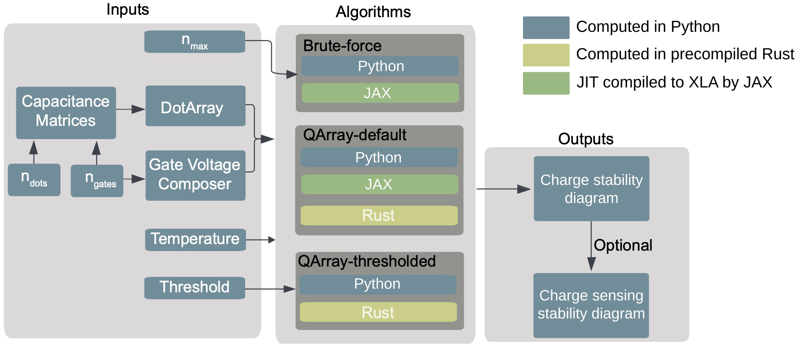
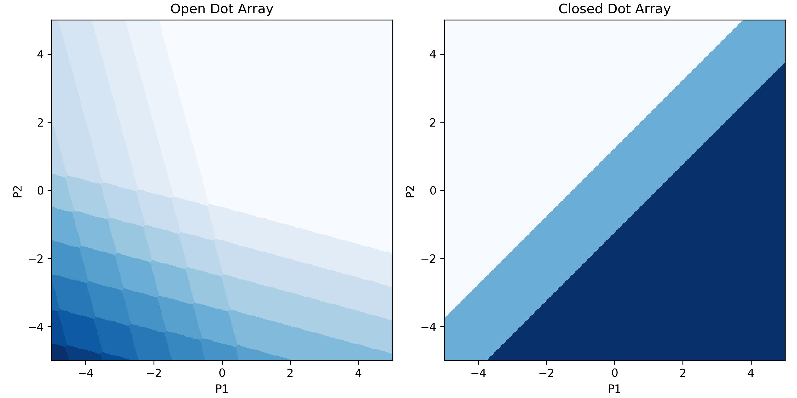
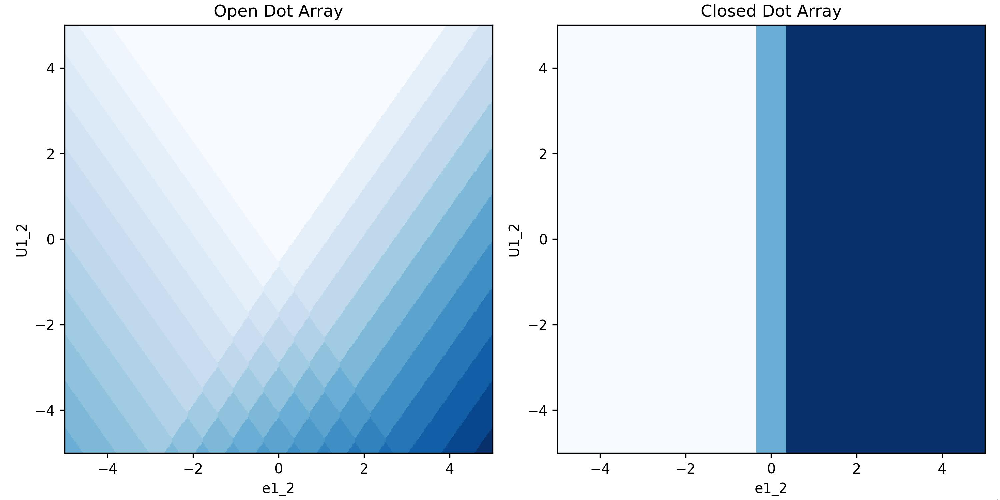
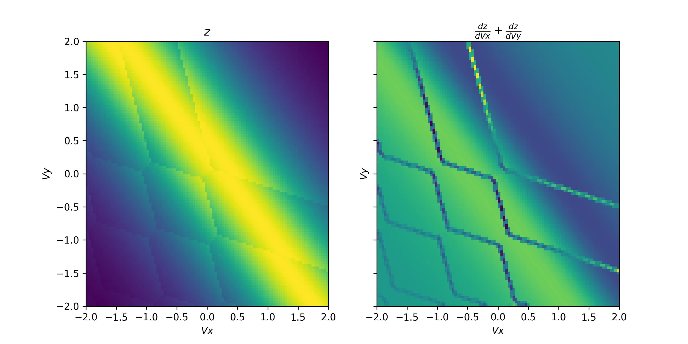

Getting Started

Simulating charge stability diagrams
To get started with QArray all you need is the DotArray class. This class stores the capacitance matrices that define your simulated system. It also provides the functionality to calculate the charge configuration of the quantum dot system with the lowest energy given a set of gate voltages. Here we will be outlining how to use QArray to produce the stability diagram of a double quantum dot.
Firstly, we import the DotArray and GateComposer classes:
from qarray import DotArray
import matplotlib.pyplot as plt
Upon initialising the DotArray class, we specify the system’s capacitance matrices:
model = DotArray(
Cdd =[
[0., 0.1],
[0.1, 0.] ],
Cgd =[
[1., 0.2],
[0.2, 1]],
)
Here, Cdd encodes the capacitive couplings between dots (the dd subscript meaning dot-to-dot), and Cgd encodes the capacitive couplings between the dots and the gates (dg being dot-to-gate). These capacitance matrices can also be passed in their Maxwell format, using the keyword arguments cdd and cgd.
Now to compute the charge stablitiy diagram of an open (reservior mode) double dot when we sweep the plunger gates from -5 to 5 in both the x and y directions, with 100 points in each direction.
We do this by calling the do2d_open method of the DotArray class. This method returns a (100, 100, 2) array encoding the lowest-energy charge configuration for each combination of gate voltages in the measurement. To
To sweep over the virtualised plunger gates simply use the arguments ‘vP1’ and ‘vP2’ instead of ‘P1’ and ‘P2’. To sweep over the detuning and onsite energy
use the
# run the simulation in the open regime
n_open = model.do2d_open(
x_gate = 'P1', x_min = -5, x_max = 5 , x_res = 100,
y_gate = 'P2', y_min = -5, y_max = 5 , y_res = 100
)
To sweep compute the same charge stability diagram in the closed (isolation model) regime we simply call the do2d_closed method of the DotArray class.
This method returns a (100, 100, 2) again encoding the lowest energy charge configuration for each gate voltage configuration in the measurement. However,
this time the number of charge carriers in the system is fixed to two.
# run the simulation in the open regime
n_closed = model.do2d_closed(
x_gate = 'P1', x_min = -5, x_max = 5 , x_res = 100,
y_gate = 'P2', y_min = -5, y_max = 5 , y_res = 100,
n_charges = 2
)
With the calculations handled, we can now plot the output. We encode the change in output value due to a dot occupation change in the charge_state_contrast_array.
# importing a function which dots the charge occupation with the charge state contrast to yield a z value for plotting by imshow.
from qarray import charge_state_to_scalar
# plot the results
extent =(-5, 5, -5, 5)
fig, ax = plt.subplots(1, 2, figsize=(10, 5))
ax[0].imshow(charge_state_to_scalar(n_open), extent=extent, origin='lower', cmap='Blues')
ax[0].set_title('Open Dot Array')
ax[0].set_xlabel('P1')
ax[0].set_ylabel('P2')
ax[1].imshow(charge_state_to_scalar(n_closed), extent=extent, origin='lower', cmap='Blues')
ax[1].set_title('Closed Dot Array')
ax[1].set_xlabel('P1')
ax[1].set_ylabel('P2')
plt.show()

However, we are not limted to just sweeping the plunger gates. We can sweep the virtualised plunger gates by charging the arguments to ‘vP1’ and ‘vP2’. We can also sweep the detuning and onsite energy by changing the arguments to ‘e1_2’ and ‘U1_2’ respectively. This is shown below:
n_open_detuning = model.do2d_open(
x_gate = 'e1_2', x_min = -5, x_max = 5 , x_res = 100,
y_gate = 'U1_2', y_min = -5, y_max = 5 , y_res = 100
)
n_closed_detuning = model.do2d_closed(
x_gate = 'e1_2', x_min = -5, x_max = 5 , x_res = 100,
y_gate = 'U1_2', y_min = -5, y_max = 5 , y_res = 100,
n_charges = 2
)
fig, ax = plt.subplots(1, 2, figsize=(10, 5))
ax[0].imshow(charge_state_to_scalar(n_open_detuning), extent = extent, origin='lower', cmap='Blues')
ax[0].set_title('Open Dot Array')
ax[0].set_xlabel('e1_2')
ax[0].set_ylabel('U1_2')
ax[1].imshow(charge_state_to_scalar(n_closed_detuning), extent=extent, origin='lower', cmap='Blues')
ax[1].set_title('Closed Dot Array')
ax[1].set_xlabel('e1_2')
ax[1].set_ylabel('U1_2')
plt.tight_layout()
plt.show()

The DotArray class init has additional arguments that we left at their default values for the example above. For more control over your simulation, you may wish to use any of the following:
algorithm : str : The algorithm used to calculate the ground state of the quantum dot system. The default is ‘default’, with the alternatives being ‘brute_force’ and ‘thresholded’.
implementation : str : The implementation used to calculate the ground state of the quantum dot system. The default is ‘rust’, with the alternatives being ‘python’ and ‘jax’ for GPU acceleration.
T : float : The temperature of the system in kelvin to simulate thermal broadening. The default is 0.
charge_carrier: str : The charge carrier used in the simulation. The default is ‘hole’, with the alternative being ‘electron’.
threshold : float : The threshold used in the thresholded algorithm (see Section III B 2 of the paper).
max_charge_carriers: int : The maximum number of charge carriers that can be on a dot, when using the brute_force algorithm.
Charge sensing
To simulate a charge sensing measurement, we use the ChargeSensedDotArray class. This class is functionally similar to the DotArray class, but includes a quantum dot charge sensor coupled to the device array. We can control the strength of this coupling via the two additional matrices that it is necessary to include upon initialising the ChargeSensedDotArray class. The first (Cds) specifies the strength of the coupling between the device array’s dots and the charge sensor, and the second (Cgs) specifies the strength of the coupling between the device array’s gates and the charge sensor. The width of the Coulomb peak in the simulated charge sensing quantum dot is passed via the coulomb_peak_width keyword argument.
The snippet below is an example of how we can use these classes to generate a charge-sensed measurement.
import matplotlib.pyplot as plt
import numpy as np
from qarray import ChargeSensedDotArray
# defining the capacitance matrices
Cdd = [[0., 0.1], [0.1, 0.]] # an (n_dot, n_dot) array of the capacitive coupling between dots
Cgd = [[1., 0.6, 0.05], [0.2, 1., 0.05], ] # an (n_dot, n_gate) array of the capacitive coupling between gates and dots
Cds = [[0.02, 0.01]] # an (n_sensor, n_dot) array of the capacitive coupling between dots and sensors
Cgs = [[0.06, 0.05, 1]] # an (n_sensor, n_gate) array of the capacitive coupling between gates and sensor dots
# creating the model
model = ChargeSensedDotArray(
Cdd=Cdd, Cgd=Cgd, Cds=Cds, Cgs=Cgs,
coulomb_peak_width=0.05, T=100
)
It is important to note that for the double dot there are now three gates,
one for each dot and one for the charge sensor. The index 0 corresponds to the first dot,
index 1 to the second dot and index 2 to the charge sensor. For this example we will sweep the plunger gates of the double dot,
however, this time we will do it in a slightly different way, using the gate voltage composer calss to create the gate voltage sweep.
This class is used behind the scenes in the do2d_open and do2d_closed methods of the DotArray class. However,
using it explicitly allows us to create more complex sweeps, such as the one we will do here. We will make use of
an addition piece of functionality, provided by both the DotArray and ChargeSensedDotArray classes, which is the
optimal_Vg method. This method returns the optimal gate voltages which minimise the free energy of a given charge state.
For example, if we have a charge state of [1., 1., 1.] (in the case of two array dots and one charge sensing dot), the optimal_Vg method will return the gate voltages that configure the simulated device to be in the middle of the [1, 1] charge state and directly on top of the first Coloumb peak in the charge sensor. If the user passes [0.5, 0.5, 0.5], the
method will return the gate voltages corresponding to the middle of the [0, 1] - [1,0] interdot charge transition and exactly halfway between two Coulomb peaks in the charge sensing dot. This can be useful for centring your simulation on a specific charge transition or state, as demonstrated in the snippet below.
# defining the min and max values for the dot voltage sweep
vx_min, vx_max = -2, 2
vy_min, vy_max = -2, 2
# using the dot voltage composer to create the dot voltage array for the 2d sweep
vg = model.gate_voltage_composer.do2d('P1', vy_min, vx_max, 100, 'P2', vy_min, vy_max, 100)
# centering the voltage sweep on the [0, 1] - [1, 0] interdot charge transition on the side of a charge sensor coulomb peak
vg += model.optimal_Vg([0.5, 0.5, 0.6])
# calculating the output of the charge sensor and the charge state for each gate voltage
z, n = model.charge_sensor_open(vg)
dz_dV1 = np.gradient(z, axis=0) + np.gradient(z, axis=1)
We can plot the output of the charge sensor and its gradient with respect to the gate voltages:
fig, axes = plt.subplots(1, 2, sharex=True, sharey=True)
fig.set_size_inches(10, 5)
# plotting the charge stability diagram
axes[0].imshow(z, extent=[vx_min, vx_max, vy_min, vy_max], origin='lower', aspect='auto', cmap='hot')
axes[0].set_xlabel('$Vx$')
axes[0].set_ylabel('$Vy$')
axes[0].set_title('$z$')
# plotting the charge sensor output
axes[1].imshow(dz_dV1, extent=[vx_min, vx_max, vy_min, vy_max], origin='lower', aspect='auto', cmap='hot')
axes[1].set_xlabel('$Vx$')
axes[1].set_ylabel('$Vy$')
axes[1].set_title('$\\frac{dz}{dVx} + \\frac{dz}{dVy}$')
plt.show()
The output of the code above is shown below: 
Whilst this plot looks closer to what we see experimentally, we are missing noise. See the examples section for how to do this.